ПРЕДПРАЗДНИЧНОЕ АССОРТИ
no comments (почти)...
Друзья, по случаю каникул я сегодня позволю себе ограничиться полутора десятками ссылок на художников, которых не знаю, к каким бы прицепить спекуляциям.
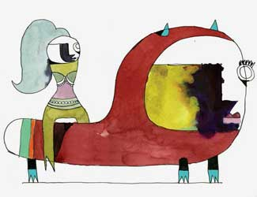
Вот где Стейнберг-то. Страшно мне нравится.
Еще забыл в тот раз упомянуть Ральфа Стедмана, но его, конечно, и так все знают:
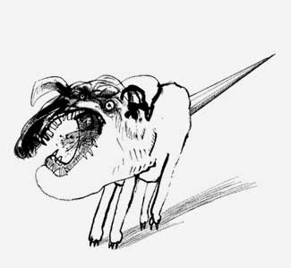
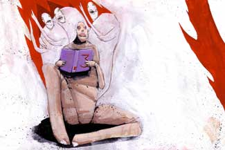
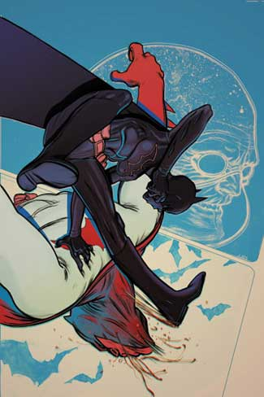
Встречаются среди прочего профессионализма очень мощные вещи. Распиленная земля вот здесь была его же.
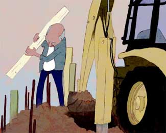
Галшкеди брови снял с Зои Черкасской, но местами и сам вполне себе.
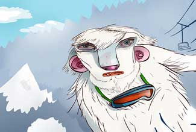
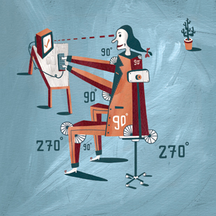
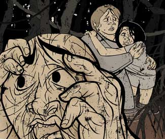
страшненький.
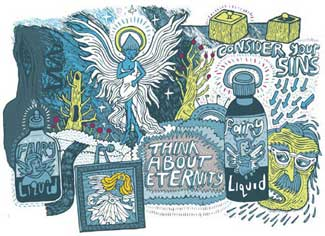
веб-дизайн, в частности, замечательный Jason Nobriga
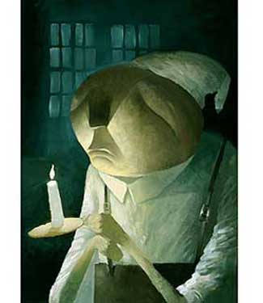
в компанию к Джо Соррену и прочим.
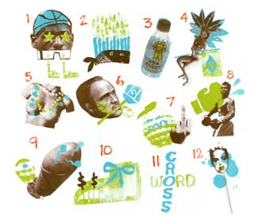
Почему, ну почему не я придумал эту розу?
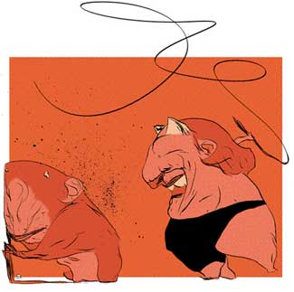
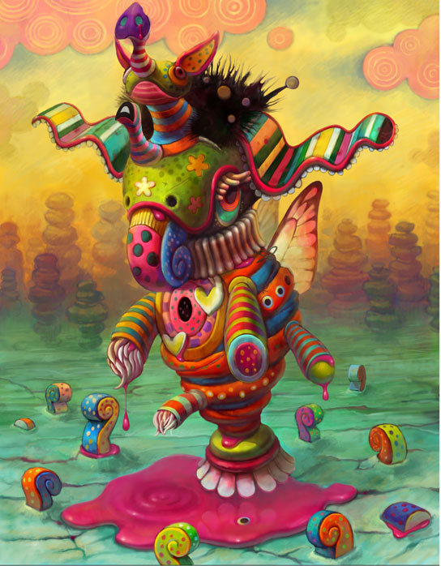
Вудринг по-японски вдруг кого вдохновит.
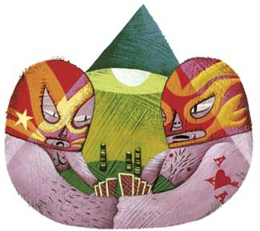
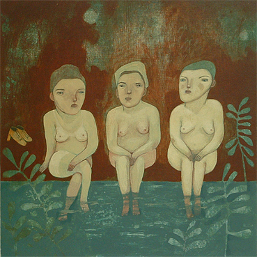
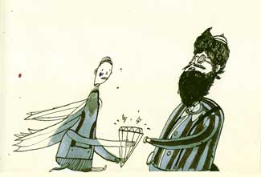
До встреч в новом году, дорогие коллеги. Желаю вам отоспаться.